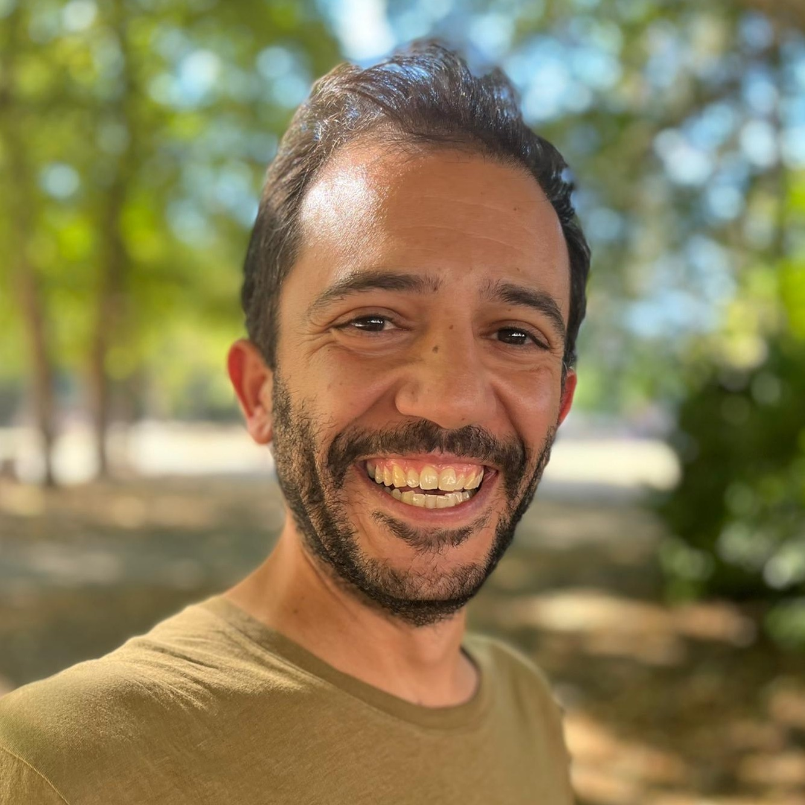

Yokohama, Japan
PhD in Geography · MSc Cognitive Neurosciences · MSc Architecture. I teach mathematics and data science in international school and university settings, and build research tools at the intersection of spatial analysis and learning science.

About
International educator with doctoral training in Geography and deep expertise in mathematics, statistics, and data science. Work spans university research and teaching, K-12 international school instruction, and independent software development.
Currently working at Yokohama International School, delivering inquiry-based lessons across elementary grades and coordinating Makerspace programming. Previously, designed and taught data science courses at the University of Amsterdam and led spatial analysis research at Ghent University. Proven ability to differentiate instruction for diverse learners, including gifted students requiring advanced curriculum and behavioral support. Strong background in educational technology, maker education, and transdisciplinary learning.
Multilingual educator, native in English and Portuguese, C1 in Spanish, B2 in German and Dutch, B1 in French, and A2 in Japanese.
Experience
Education
Languages
Research
Writing
Professional Development
Completed professional development coursework in Evolutionary Psychology, Psychology of Learning, Neuroscience and Education, Developmental Cognitive Psychology, Game Theory Applications in the Classroom, and Gamification of Learning.
University of Coimbra, 2004–2011